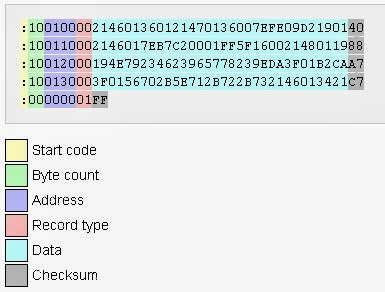

Format de l’arxiu
Els arxius Intel HEX són en realitat arxius de text que segueixen el format anomenat “Intel HEX format”.
Cada línia d’aquests arxius conté un registre HEX. Aquests registres estan formats per nombres expressats en base hexadecimal que representen el codi de llenguatge màquina i/o dades constants.
Els arxius Intel HEX s’utilitzen habitualment per transferir programes i dades que podran ser emmagatzemats en una memòria ROM o EPROM. La majoria de programadors EPROM o emuladors fan servir arxius Intel HEX com a entrada.
El format dels registres

Un arxiu Intel HEX està format per qualsevol nombre de registres HEX. Cada registre està format per 5 camps que segueixen la següent disposició:
:llaaaatt[dd...]ccCada grup de lletres correspon a un camp diferent, i cada lletra representa un únic dígit hexadecimal. Cada camp està format per un mínim de dos dígits hexadecimals (que formen un byte) tal i com es descriu tot seguit:
| Camp | Descripció |
|---|---|
: |
Marca l’inici de cada registre Intel HEX |
ll |
És el camp de longitud de registre i representa el nombre de bytes de dades (dd) en el registre |
aaaa |
És el camp d’adreça que representa l’adreça inicial per al bloc de dades del registre |
tt |
És el camp que representa el tipus de registre, que pot ser qualsevol d’entre els següents casos: 00 - registre de dades 01 - registre de final d’arxiu 02 - Registre d’adreça de segment extensa 04 - Registre d’adreça lineal extensa |
dd |
És el camp de dades que representa un byte de dades. Un registre pot tenir molts bytes de dades. El nombre de bytes de dades del registre ha de coincidir amb la quantitat especificada pel camp ll |
cc |
És el camp de suma de comprovació del registre. Es calcula sumant els valors de totes les parelles de dígits hexadecimals del registre, en mòdul 256, i prenent el complement a 2 del resultat. |
Registres de dades
Un arxiu Intel HEX està format per qualsevol quantitat de registres de dades que terminen amb un retorn de línia i un avanç de línia (CR+LF).
Els registres de dades apareixen així:
:10246200464C5549442050524F46494C4500464C33Aquest exemple està codificat tal i com s’indica tot seguit:
:10246200464C5549442050524F46494C4500464C33
|||||||||{<-------- DD (Dades) -------->}||
||||||||| ||
|||||||TT (Tipus de registre) CC (Suma de comprovació)
|||AAAA (Adreça inicial)
|LL (Longitud del registre)
: (Inici de registre)Per tant:
10és el nombre de bytes de dades en el registre (16 bytes).2462és l’adreça on les dades hauran de ser col·locades a memòria.00és el tipus de registre (un registre de dades en aquest cas).33és la suma de comprovació del registre.
Registres d’adreça lineal extensa (HEX386)
Els registres d’adreça lineal extensa són també coneguts com a “registres d’adreça de 32 bits” o registres HEX386. Aquests registres contenen els 16 bits de la part alta (bits 16-31) de l’adreça de les dades.
Els registres d’adreça lineal extensa presenten sempre dos bytes de dades i apareixen com es mostra en aquest exemple:
:02000004FFFFFCOn:
02és la quantitat de bytes de dades del registre.0000és el camp d’adreça. En aquests registres aquest camp és sempre 0000.04és el tipus de registre pels registres d’adreça lineal extensa.FFFFés la part alta de l’adreça en aquest exemple.FCés la suma de comprovació del registre, calculada com a:\[\overline{ 0x02 + 0x00 + 0x00 + 0x04 + 0xFF + 0xFF } + 0x01 = 0xFC\]
Quan es llegeix un registre d’adreça lineal extensa, la part alta llegida del registre en el camp de dades s’aplica en el càlcul d’adreça completa dels registres següents de l’arxiu Intel HEX. L’adreça lineal extensa roman efectiva fins que no es canviï per una altra amb un nou registre d’aquest tipus.
L’adreça absoluta de memòria d’un registre de dades s’obtindrà afegint el camp d’adreça del registre a l’adreça de les dades del registre d’adreça lineal extensa. L’exemple següent il·lustra aquest procés:
Adreça del camp d'adreça del registre de dades 2462
Adreça lineal extensa activa FFFF
--------
Adreça de memòria absoluta FFFF2462Registre d’adreça de segment extensa (HEX86)
Els registres d’adreça de segment extensa, també coneguts com a registres HEX86, contenen els bits 4-19 de l’adreça de segment de les dades.
Els registres d’adreça de segment extensa sempre presenten dos bytes de dades i apareixen com es mostra aquí:
:020000021200EAOn:
02és la quantitat de bytes de dades del registre.0000és el camp d’adreça. En aquests registres aquest camp és sempre 0000.02és el tipus de registre pels registres d’adreça de segment extensa.1200és la part alta de l’adreça en aquest exemple.EAés la suma de comprovació del registre, calculada com a:\[\overline{ 0x02 + 0x00 + 0x00 + 0x02 + 0x12 + 0x00 } + 0x01 = 0xEA\]
Quan es llegeix un registre d’adreça de segment extensa, l’adreça de segment extensa emmagatzemada en el camp de dades es desa i s’aplica als registres llegits a continuació en l’arxiu HEX. El segment d’adreça roman efectiu fins que no es canviï per un altre registre d’adreça de segment.
L’adreça de memòria absoluta d’un registre de dades s’obté afegint el camp d’adreça del registre amb l’adreça de segment del registre d’adreça de segment extensa. El següent exemple il·lustra aquest procés:
Adreça del camp d'adreça del registre de dades 2462
Adreça de segment extensa activa 1200
--------
Adreça de memòria absoluta 00014462Registre de final d’arxiu (EOF)
Un arxiu Intel HEX ha d’acabar amb un registre de final d’arxiu (EOF, End-Of-File). Aquest registre ha de tenir el valor 01 com a tipus de registre, i sempre apareix com es mostra aquí:
:00000001FFOn:
00és la quantitat de bytes de dades del registre.0000és el camp d’adreça. En aquests registres aquest camp no té cap significat i és ignorat. Sol fer-se servir 0000.01és el tipus de registre pel registre de final d’arxiu.FFés la suma de comprovació del registre, calculada com a:\[\overline{ 0x00 + 0x00 + 0x00 + 0x01 } + 0x01 = 0xFF\]
Exemple d’arxiu Intel HEX
A continuació es mostra l’exemple d’un arxiu complet Intel HEX:
example.hex
Si fa les comprovacions, aquest arxiu és tot un arxiu de dades, amb diferents fragments declarats a cada línia de l’arxiu:
0x0013 : AC 12 AD 13 AE 10 AF 11 12 00 2F 8E 0E 8F 0F 22
0x0003 : E5 0B 25 0D F5 09 E5 0A 35 0C F5 08 12 00 13 22
0x0000 : 02 00 23
0x0023 : 78 7F E4 F6 D8 FD 75 81 13 02 00 03
0x002F : EF F8 8D F0 A4 FF ED C5 F0 CE A4 2E FE EC 88 F0
0x003F : A4 2E FE 22Redreçant tot el bloc en ordre, posant-lo en línies de 16 bytes per línia, composaria el següent arxiu binari (mostrat aquí en notació hexdump):
00000000 02 00 23 e5 0b 25 0d f5 09 e5 0a 35 0c f5 08 12 |..#..%.....5....|
00000010 00 13 22 ac 12 ad 13 ae 10 af 11 12 00 2f 8e 0e |.."........../..|
00000020 8f 0f 22 78 7f e4 f6 d8 fd 75 81 13 02 00 03 ef |.."x.....u......|
00000030 f8 8d f0 a4 ff ed c5 f0 ce a4 2e fe ec 88 f0 a4 |................|
00000040 2e fe 22 |.."|